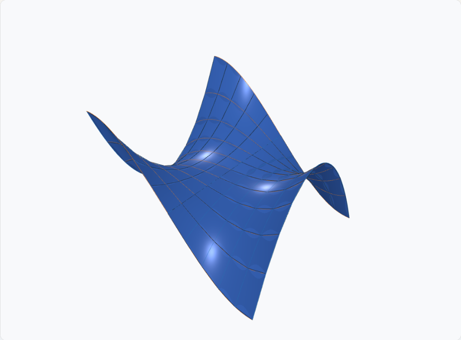
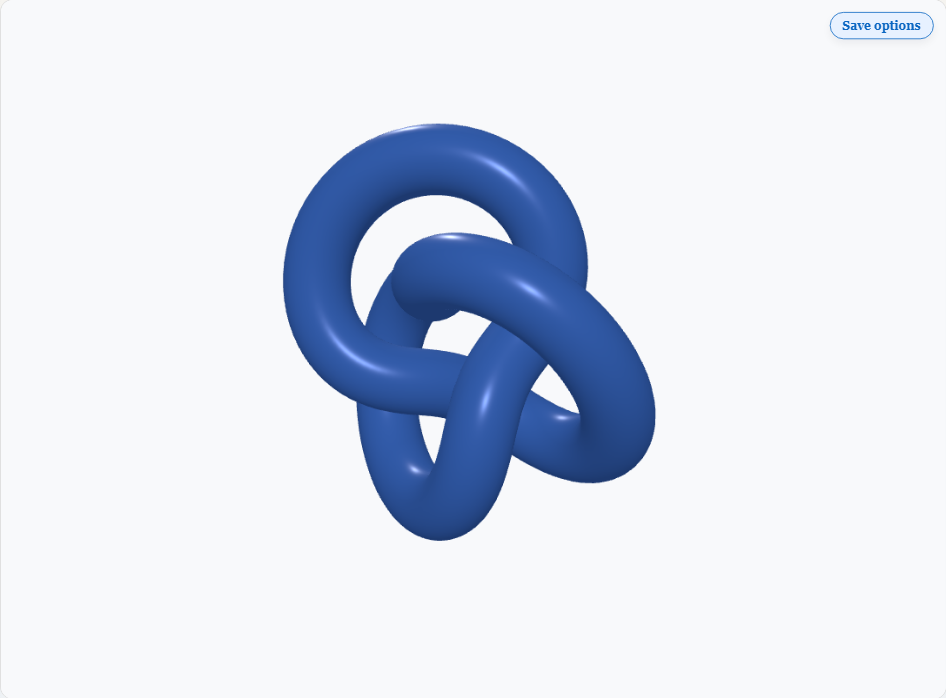
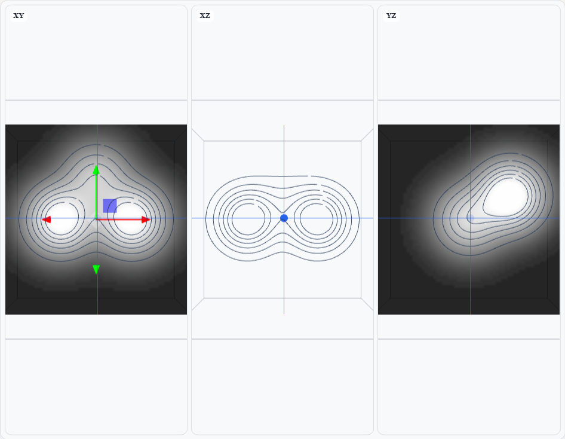
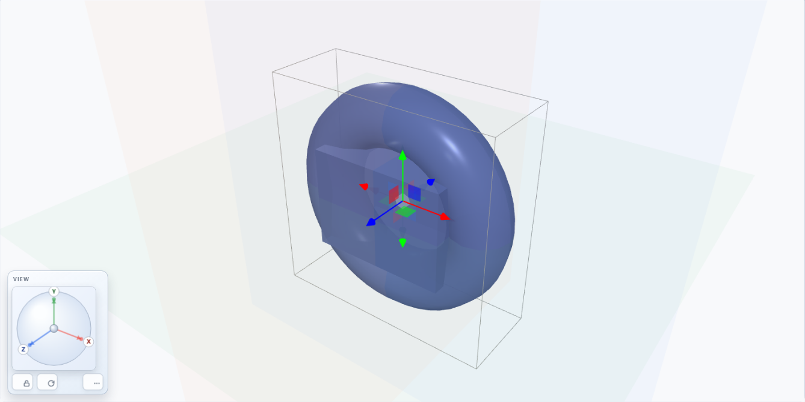
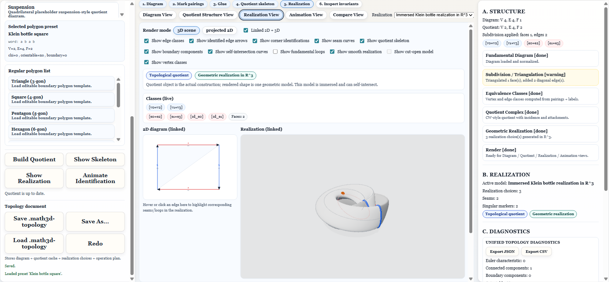
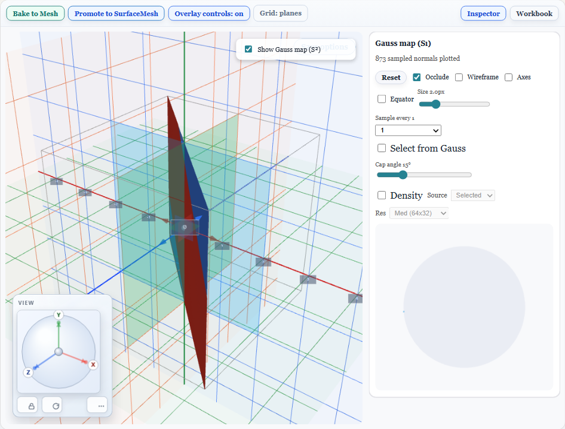

Product Modules
Top Math3D modules in one view.
Each module below includes a quick summary, a representative main-viewer scene screenshot, and key feature
highlights.
Surface
Surface Studio
Work with explicit, implicit, and parametric equations for high-quality surface exploration.
- Preset library for standard and advanced surfaces.
- Live parameter controls with immediate mesh updates.
- Curvature-aware visualization and overlays.

Mesh
Mesh Workbench
Create and inspect triangle meshes for simulation, export, and topology-aware editing workflows.
- Mesh preview stages for rapid quality checks.
- Pipeline-ready outputs for downstream tools.
- Selection and inspection tooling in the same workspace.

Volume
Volume Viewer
Visualize scalar fields as volume-oriented scenes and navigate structures with scene-based controls.
- Field-to-scene workflows integrated with viewer controls.
- Volume-compatible rendering in desktop and web modes.
- Smooth camera navigation for dense 3D data exploration.

Geometry
Geometry Builder
Build procedural solids and object compositions with inspector feedback and scene-level controls.
- Procedural object construction with reusable presets.
- Constraint and measurement-aware scene inspection.
- Fast iteration for educational and design prototypes.

Topology
Topology Lab
Study manifold realizations and shape transitions through stage-driven topology visualizations.
- Preset studies for torus, Mobius strip, and Klein bottle.
- Stage-based realization transitions for teaching flow.
- Side-by-side structural exploration with inspector context.

Complex Analysis
Complex Mapping Workspace
Inspect complex-domain mappings and color-coded structures for function behavior analysis.
- Domain-coloring style visual diagnostics.
- Function behavior checks through interactive panels.
- Map-oriented views for instructional and exploratory use.
